A barra flutua sobre o papel de parede.
Widgets à esquerda, apps no meio e a bandeja à direita, cada grupo na sua pílula de vidro, com cantos, brilho e borda de luz ajustáveis.
A barra de tarefas, o menu Iniciar e os menus do sistema ganham vidro de verdade, e os widgets escorrem da barra como líquido. É só instalar e pronto.
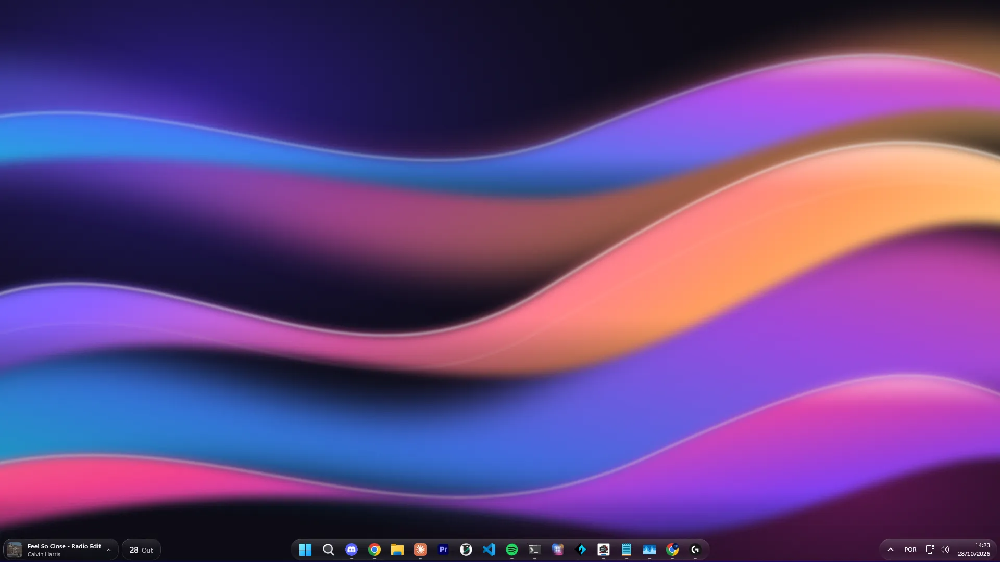
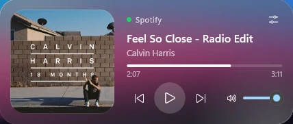
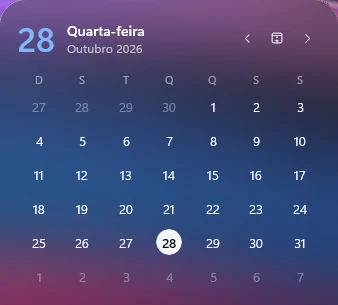
O efeito é aplicado nos próprios elementos do Windows. Não é uma dock por cima nem um menu falso: tudo continua funcionando como sempre, só que em vidro.
Widgets à esquerda, apps no meio e a bandeja à direita, cada grupo na sua pílula de vidro, com cantos, brilho e borda de luz ajustáveis.
O dia e o mês na barra, e o mês inteiro com o Google Agenda.
Capa, controles, progresso e volume do app que está tocando. Vire o cartão e ajuste o volume de cada app aberto.
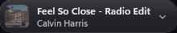
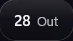
Os últimos textos e imagens que você copiou ficam numa pílula. Um clique cola de novo no app em que você estava.
Escreva e pronto: ele salva sozinho, no seu computador.
Configurações rápidas, mídia, notificações e ícones ocultos.
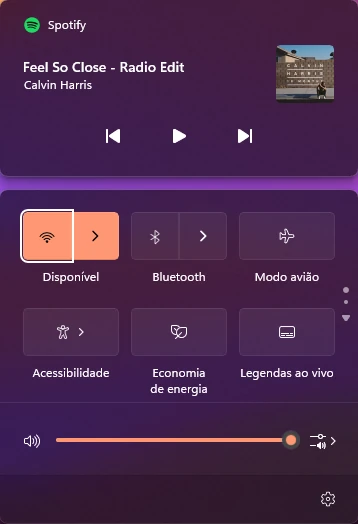
O Windows Terminal ganha o mesmo vidro, para o código também ficar bonito.
CPU, RAM, GPU, rede e disco numa pílula, você escolhe quais. Um toque abre o último minuto em gráficos: cada núcleo da CPU, quem mais usa memória, a VRAM, download e upload e o espaço do disco.
O mesmo vidro, a mesma tinta e os mesmos cantos da barra. Tudo conversa.
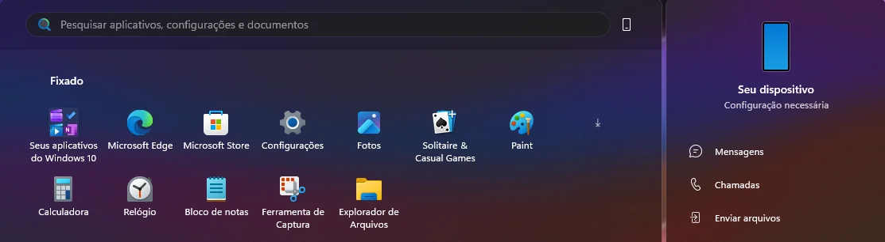
Os widgets não simplesmente aparecem: o vidro sobe da barra, se solta em gotas e assenta no cartão. Toque de novo e ele volta para dentro da pílula.
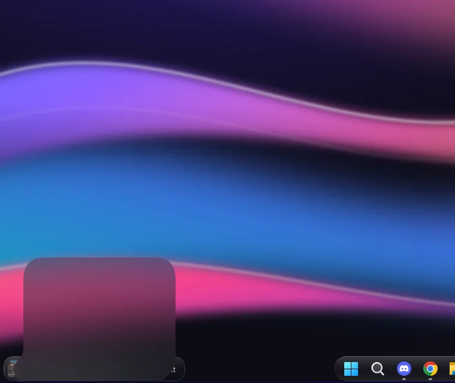
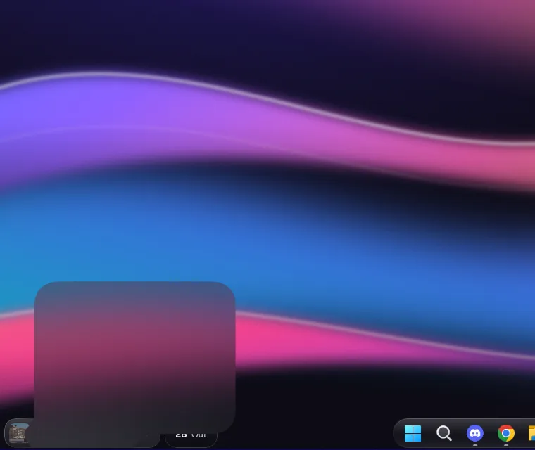
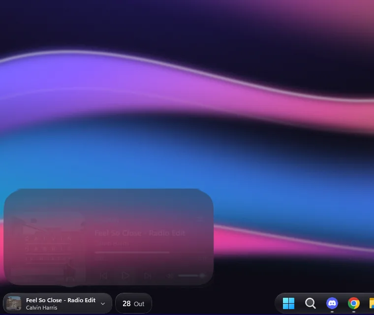
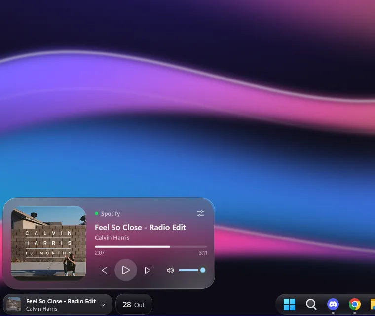
Do vidro limpo, com o papel de parede nítido, ao bem fosco. Experimente aqui: é o mesmo controle que você tem no app.
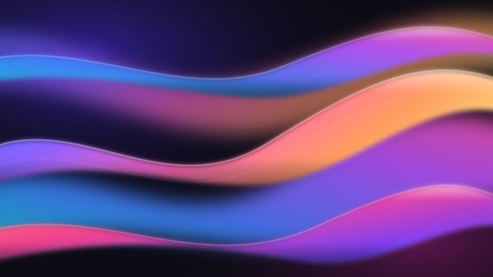
Vidro, tinta e luz mudam juntos.
Fica nos ícones ocultos, abre com o Windows e reaplica o vidro sozinho quando o Explorer reinicia. Desligou ou saiu, o Windows volta ao visual original.
A agenda é opcional. Ela só se conecta ao Google quando você clica em “Conectar conta Google”, e o login acontece na página do próprio Google. O WinGlass pede permissão somente de leitura e usa os dados apenas para mostrar o widget:
Os eventos ficam apenas na memória. Nada é enviado a servidores do WinGlass (eles não existem), vendido ou compartilhado. Desconecte quando quiser no app ou em myaccount.google.com/permissions. Detalhes na política de privacidade.
Nada. O WinGlass é gratuito na Microsoft Store, sem anúncios e sem compras dentro do app.
Não. O WinGlass foi feito para o Windows 11, que é onde ficam a barra, o menu Iniciar e os menus que ele transforma.
Não. O vidro é aplicado enquanto o app está ligado. Desligou ou saiu, o Windows volta exatamente ao visual original. Ao desinstalar, o Windows remove tudo.
Só se quiser ver os seus eventos no widget de agenda. Todo o resto funciona sem conta nenhuma.
Não. Ele lê os mesmos contadores do Gerenciador de Tarefas uma vez por segundo, e a lista de quem mais usa memória só é lida com o cartão aberto. Nada sai do seu PC.
Não. Ele não tem servidores, telemetria nem anúncios. Configurações, anotações e o histórico da área de transferência ficam no seu computador. Leia a política de privacidade.